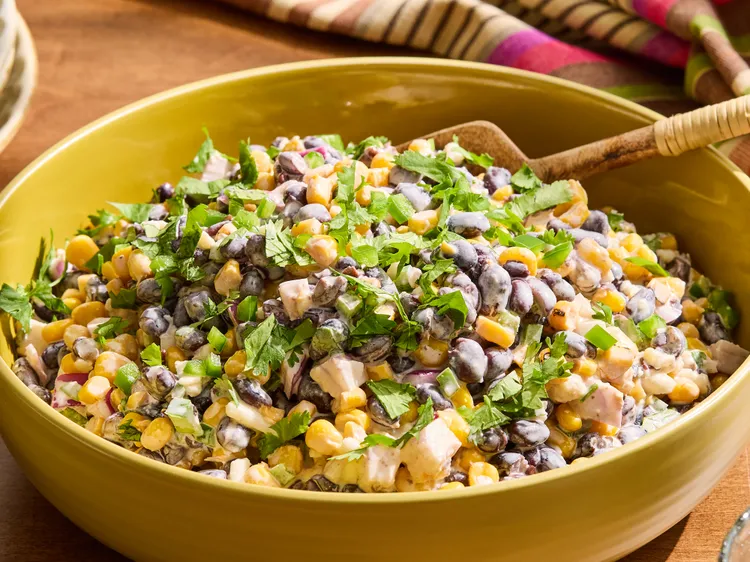

Mexican Street Corn-Inspired Bean Salad

the image is from allrecipes
https://www.allrecipes.com/mexican-street-corn-inspired-bean-salad-recipe-12010504
Ingredients
- 1 cup mayonnaise
- 1/4 cup lime juice
- 1/2 teaspoon garlic powder
- 1/4 teaspoon ground cumin
- 1/4 teaspoon chili-lime seasoning or chili powder
- 30 ounces cans black beans, drained and rinsed
- 1 (14.75 ounce) can Mexican-style street corn, drained
- 1/2 cup chopped red onion
- 1 fresh jalapeno, chopped (seeded, if desired), plus more for garnish
- 1/2 cup crumbled cotija cheese
- 1/3 cup chopped cilantro, plus more for garnish
Steps
-
Stir together mayonnaise, lime juice, garlic powder, cumin, and chili-lime seasoning in a large bowl until smooth.
- Add black beans, corn, red onion, jalapeño, cotija cheese, and 1/3 cup cilantro. Gently stir until well coated.
- Garnish with additional chopped jalapeños and cilantro. Serve immediately, or cover and refrigerate up to 3 days before serving.
Home